Sewing text and images together in the digital environment. A review of Bayeux Tapestry Digital Edition
Table of Contents
Abstract
The following contribution is focused on Bayeux Tapestry Digital Edition (BTDE), a project addressed to a heterogeneous audience that aims to describe this famous embroidery from different perspectives. Indeed, not only does this scholarly edigital edition (SDE) provide a high-quality facsimile of this artwork, but it also tries to reconstruct its historical and cultural background. This review mainly aims at describing the contents of the edition and their presentation, considering also the available approaches and tools when BTDE was first published. Moreover, it suggests possible further implementations and highlights minor issues in the sustainability and in the rendering of the Latin inscriptions. The review will show how the project can be considered a pioneering example of a scholarly digital edition, which managed to reconstruct the complexity of the chosen document in a digital environment, proposing an interesting solution to combine multimedia assets.
Introduction
The Bayeux Tapestry is an almost 70-meter-long embroidery visually and verbally describing the events related to William the Conqueror and the Battle of Hastings (1066). The narration of the deeds is provided by a variegated iconographic apparatus and short Latin inscriptions, which make the Tapestry “a historical account, but also an essential source of information on the way of life in the Middle Ages: it is therefore a documentary record which employs particular narrative techniques and makes use of symbolism” (UNESCO 2006, 1).
Its complex nature and its historical relevance awoke considerable historical interest in the field of scholarly editions. The Tapestry was rediscovered in 1728 by Bernard de Montfaucon, who curated the first facsimile reproduction; this edition was followed in the nineteenth century by two other reproductions by Charles Sothard (ante 1824) and Elizabeth Wardle (1885). The embroidery later enjoyed long-lasting philological fame also during the last century, in particular thanks to the critical editions by Sir Frank Stenton (1965), David M. Wilson (1985), and Bernstein (1986) (see Spear 1992). This established editorial tradition led to the creation of the Bayeux Tapestry Digital Edition (BTDE), which aims to reproduce the embroidery to exploit the possibilities of the digital environment to provide a new reading experience to the user.
This project was developed from 1996 to 2002 thanks to the partial funding of Loyola University Chicago, a pioneering research hub in the field of scholarly digital editions (e.g., see the Charles Harpur Critical Archive), with the main collaboration of the Center for Research and Creativity at Florida State University and Hood College. The development team was directed by Martin K. Foys, Assistant Professor of English at Hood College, who is responsible for the major textual and paratextual content of the scholarly digital edition (SDE). Erica L. Pittman contributed as an editor, while James Caccamo and Jody Evenson joined the project as graphic designers and contributed to the development of its CD-ROM distribution: the first edition was indeed firstly commercialised on this support – the web version, which is the reference of the current review, is a revised edition and was published almost a decade later. This general information is easily accessible from the website section “Credits”, where also their email addresses1 are indicated.
Subject and Content of the Edition
The project is a true pioneer in the field of scholarly digital editions
of multimedia documents. The major innovation is its endeavour to mediate between a
“reader-oriented” and a “document-oriented” approach. The “Introduction” page observes that in the previous printed editions (e.g. see
Fig. 1), the document was either
subdivided into high-quality, detailed segments or described through a small-scale
reproduction of large narrative blocks. BTDE is, hence, an interesting negotiation
between continuity and fragmentation: the continuity of the embroidery is preserved,
yet each panel is enhanced with high-quality reproductions, commentaries, and
ancillary media. 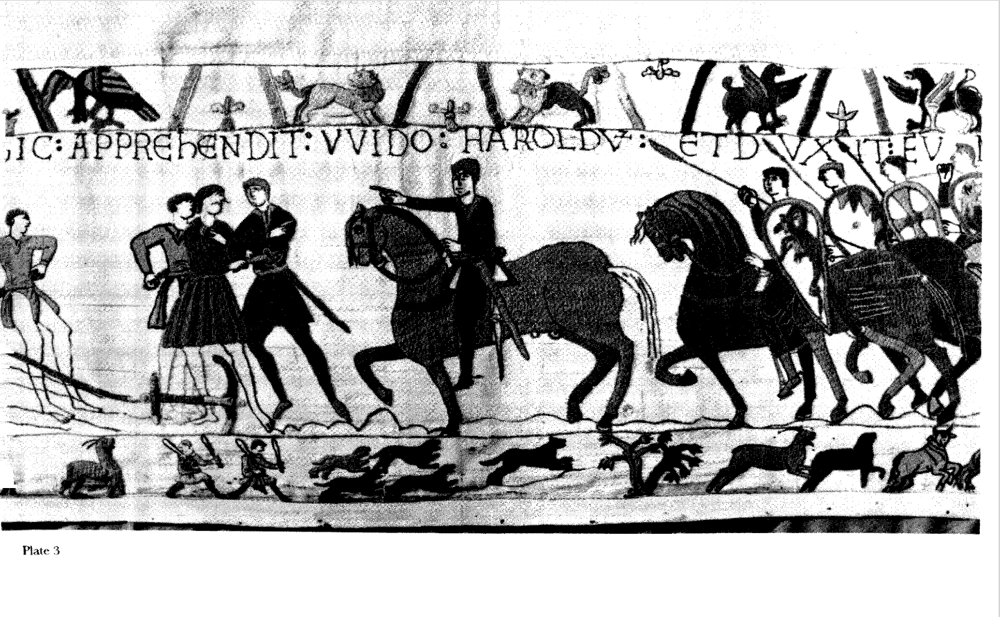
Indeed, the project “maintains a semblance of editorial control (and stability) by presenting its material in a docucentric structure” (Foys 2011, Introduction), as most of the resources are anchored to the Tapestry displayed on the home page. Thanks to this editorial choice, BTDE can be considered a forerunner of a standard model of SDE – later described in Pierazzo (2017, 2) – characterised by the “centrality” and the “pervasive presence of reproductions”. As a matter of fact, the edition proposes to the reader a high-fidelity reproduction of the embroidery, based on the critical edition published by Wilson in 1985. This version can also be compared from the “Versions” dropdown menu with three relevant facsimile reproductions: Montfaucon’s (1728), Stothard’s (1828), and Reading City Museum’s by Wardle (1885). This choice is led by two considerations. Firstly, it uses these copies as descripti to identify possible modifications to the original inscriptions during the restoration campaigns. Secondly, the presence of the facsimiles highlights how BTDE’s editor considered the embroidery, in its double nature of image and texts, as a precious source to reconstruct the history of culture and of the reception of this artwork.2
If this structure hence proves BTDE’s kinship with previous printed editions, other features show an influence of the digital scholarly tendencies at the beginning of the twenty-first century. As shown by Mancinelli and Pierazzo (2021, 38), one of these aspects is the implementation of hypertext: BTDE “uses the computer to transcend the linear, bounded and fixed qualities of the traditional written text” (Landow and Delany 1991, 227). In this way, the reader experience is richer in comparison with traditional printed books, as the “BTDE enhances the ability to produce multiple versions of the Tapestry simultaneously, realized through the user’s interaction with the readings presented in the body of commentary” and the secondary material (Foys 2011, Introduction).
Analysis of the Content: Between Hypertext and Hypermedia
The user can acquire a comprehensive knowledge of the Tapestry thanks
to the material provided by this edition, which analyses the inscription and the
images of the manufactured object and reconstructs its historical background.
Indeed, on the default “Bayeux” page, each scene can be chosen to be accompanied by a
comment (inactive by default) through a “Commentary” toggle button, consisting of
a detailed description of both the scene and its details and of the events’
historical background. Relevant restoration campaigns are also mentioned and the
iconology of the figures in the upper and lower borders is deciphered. The late
Latin inscriptions commenting on the scenes are also analysed in this section and
are transcribed and translated into English above the reproduction of the
embroidery, thanks to another toggle button (see Fig. 2). The selection of the available resources is hence
meant to reconstruct the Zeitgeist of the artwork. This setting is
also evident in the section “Background”, whose material is both
hypertextual and hypermedial. Indeed, the project
extends “hypertext by reintegrating our visual and auditory faculties into textual
experience, linking graphic images, sound, and video to verbal signs” (Landow and Delany 1991, 231).
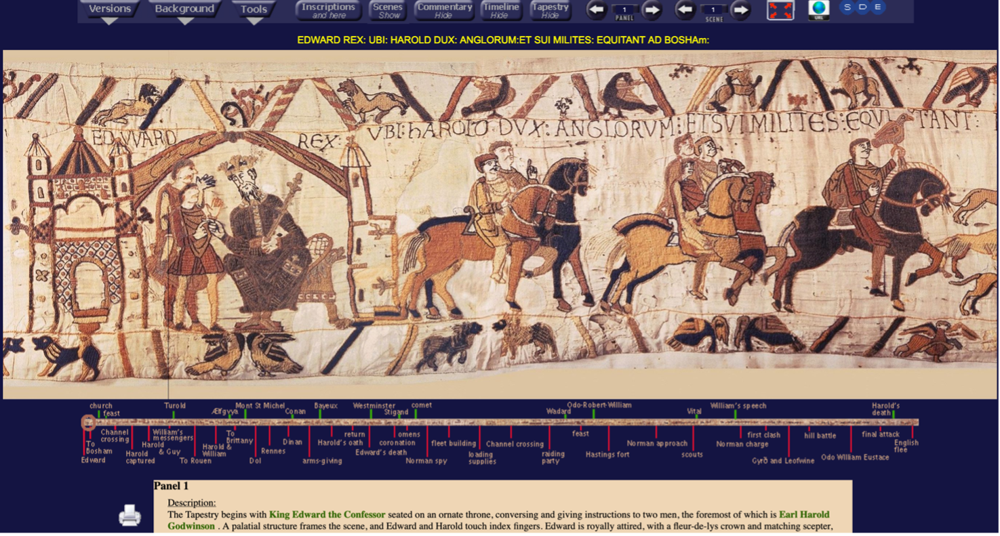
Regarding background information, the “Genealogy” section, curated by Foys, reconstructs the context of the
dynastic war between the Duke of Normandy and the King of England. The two
branches of the family are distinguished by two different colors, and the user of
the edition can point to any member of the tree to read a brief biography,
supported by several scholarly references. Each source is linked to the general
“Bibliography” page, consisting of a list of reference titles presented
as raw text. Moreover, the historical background is based not only on modern
studies but also on original sources collected in the section “Library”, either in the form of full-texts or, more often, just through
the most relevant excerpts of the sources (see Fig. 3). 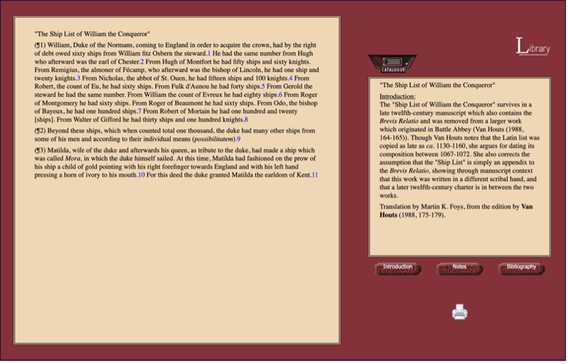 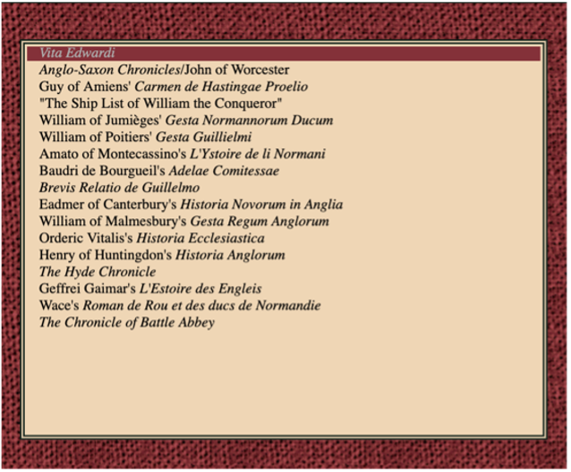
This interactive paradigm and interface characterise other sections,
like “Museum”, conceived to describe the material culture connected to the
embroidery. Each element is displayed on the right and commented on the left.
Different modalities of visualization are proposed, like “full screen” or “split
screen”, allowing to compare the analysed virtual items and a specific element of
the Tapestry (see Fig. 5). This tool is
also relevant from an art-historical point of view as it allows readers to
identify motifs and iconographic sources (seals, illuminated manuscripts,
architectures, etc.) for the embroidery (see also section 4.2). The attempt to reconstruct not only the
military history but also the eleventh-century way of life is addressed as well by
the “Glossary”, describing the events, the people, and the places presented
by the Tapestry. It contains an interesting excursus on social and
cultural aspects identifiable in the embroidery, which are enhanced with
hyperlinks to other relevant contents available in BTDE. 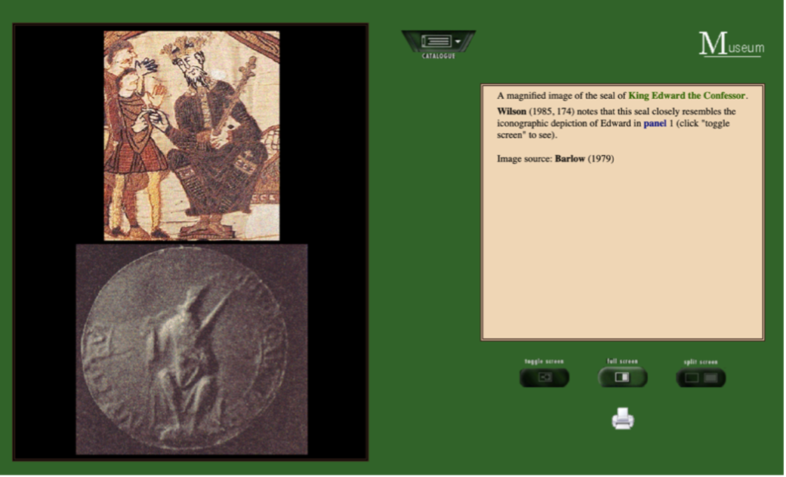
In the Glossary, the references to relevant places are intimately
linked to the “Map” section (unfortunately, this section cannot be properly viewed
anymore), storing information and animations concerning the battlefield of
Hastings and the main places mentioned by the Tapestry. Presumably, this section
should have allowed us to dive into an immersive multisensorial experience.
Unfortunately, this functionality cannot be enjoyed completely or even at all in
specific browsers. Indeed, this SDE, which was originally published in CD-ROMs,
suffers the obsolescence of different technical infrastructures: for example, the
panels of “Click map” (Fig. 6) or
“Battle map” (Fig. 7) cannot be
visualized correctly, as uploaded as a Shockwave Flash directly embedded in the
HTML code (see Code 1).3
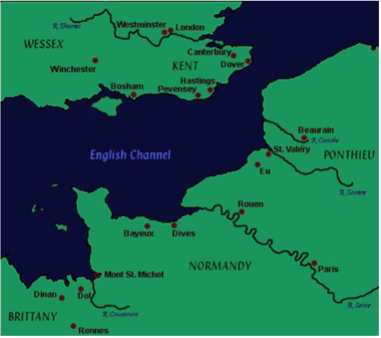
Aims and Methods of the Edition
Although the edition displays the content in an intuitive structure without omitting relevant material, the methodology, especially concerning textual scholarship, is less covered. This inaccuracy can be seen already in the lack of a proper philological statement. The sole section which may provide useful food for thought in this direction is the “Introduction”. Here, after a short bibliographical reconstruction of the history of the Tapestry, the aims of the project are stated. BTDE is not conceived as a summa of the previous studies on the embroidery. Rather, the editors identify the keywords hypertext and hypermedia as the focal point of the publication, which provides an enhanced reading experience of the edited artefact.
Therefore, the contribution of these two core concepts to the field of digital scholarly editing can be interpreted as the main ambitious research question of the project, which is addressed to both nonspecialist readers and scholars. Yet, at a closer look, specific goals can be recognized. In particular, the richness and the quality of the “Background” resources show how Foys is interested in the “history of the culture” (Pasquali 2020, 26) rather than in a sole textual analysis. The hypertextual structure is the framework where the editor sews together all the different cultural instances provided by the SDE: the embroidery is here interpreted as a potential indirect fresco of the way of life along the Channel in the eleventh century. “A hypermedia edition” – explains Foys (2011, Introduction) – “also recaptures, if only by analogy, a sense that the Tapestry itself was a multimedia document in which meaning was found through a shifting collusion of space, location, image, text, border, and perhaps even sound”.
In this direction, the adopted methodological approach might be understood as a reader-oriented critical sensitiveness. Of course, this has a great impact on defining the ‘implicit reader’ of the SDE. The project refuses a self-definition: its title mentions the edited document and the publication medium (digital). Nonetheless, an ideal reader can be modelled starting from the available material. Although the scholarly rigour can be identified by the massive, high-quality, and well-documented resources, the publication is thought not only for an academic audience but is also conceived with an educational purpose as it allows the user to experience the Tapestry as ‘an eleventh-century viewer’.
Given the importance of the photographic facsimile, BTDE can be considered as a documentary edition. Indeed, the project is presented as “the recording of as many features of the original document as are considered meaningful by the editors, displayed in all the ways the editors consider useful for the readers, including all the tools necessary to achieve such a purpose” (Pierazzo 2011, 475). Yet, the double nature of the embroidery of text and image is unevenly reproduced. Indeed, the iconographic and material aspects are thoroughly scrutinized throughout the edition, while the accurate rendering of the textual inscriptions is not prioritized as the editor’s mission sometimes appears more educational than philological. For example, the default visualization of the edition displays the text in a modern English translation rather than in Latin. This subordination reflects a specific feature of the Tapestry, where the “text constitutes a reduced chronicle of marginal, but not insignificant, importance, apparently subordinated visually and functionally to the larger figural imagery” (Brilliant 1991, 107).
Consequently, the general analysis of the inscriptions is limited to a section of the “Glossary”, besides other ‘details’ such as hairstyles, costumes, or vegetation. Here, Foys performs a palaeographical analysis of the inscriptions, stating that the letters are “drawn from a mixture of both epigraphic and manuscript models”, of capital and semi-uncial characters. Foys’ chosen solution is here a semi-diplomatic transcription, but the lack of a philological statement causes some inaccuracies, as shown in the Appendix.
Lastly, the extensive commentary on the main page, especially in the sections “Restoration” and “Inscriptions”, is intended as an apparatus where the original Tapestry is compared with the facsimiles to identify variants. After a thorough bibliographical analysis, these variants are then catalogued either as innovations of the descripti or as possible modifications to the antigraph during restoration campaigns. These sections also contain palaeographic notes on textual information, as well as references to relevant traits to define the language variety from a diachronic and diatopic perspective. However, as shown, this plethora of resources is not considered the major priority by the scholar.
This minor attention paid to the inscriptions is evident also in their rendering in the digital medium. As a matter of fact, they are encoded as plain HTML paragraphs. The documentation of the edition does not provide information in this regard: the “Introduction” section does not refer to a computer-driven management of the text nor provide information about the structure of the database. More insight on the rendering of the textual context and the structure of the database can be instead retrieved in a presentation of BTDE – in its first CD-ROM edition – by Foys in the journal Documentary Editing (Foys 2001). However, also this description is not detailed and connects the management of textual data with the “Search” functionality, which is discussed later in this review in section 4.2: “Each textual lexias in the program is stored as an external HTML file; these files in turn are compiled into a database file which may be searched through standard Boolean operands” (Foys 2001, 39). Also in this latter contribution, no other piece of information about the architecture of the database is provided.
This last article therefore confirms that inscriptions are rendered as
<p> tags, which have been manually compiled without further
annotation, and not as a text firstly marked up following the TEI Guidelines and
later converted into an HTML document with an XSLT script. This approach fails to
highlight those loci of the Tapestry that could pave the way to
philological and linguistic analyses of the text. However, this can be justified by
the technological possibilities available at the beginning of the Nineties. As said,
the development of the original BTDE CD-ROM version lasted almost a decade, from 1994
to 2003:
TEI P3 was not even released until 1994, and there was then minimal (if any) support for the intensive kind of graphic display and navigation that the BTDE required. TEI was also still based in SGML, not XML at that time. The shift to XML did not happen until TEI P4 in 2002 – again, then, while support for graphic display was developing, TEI was still not designed to easily accommodate intensive graphic display and on-they-fly assemblages of images into a continuous display. At that time (2002), it would have made little sense to (re)program the edition in TEI - and also would have required an incredible amount of coding labor, even if some of the edition’s functionality could have been replicated, which at the time appeared difficult at best, and doubtful at worst.
Publication and Presentation
Structure of the Website and Organization of the Resources
Being published at the beginning of the new millennium, BTDE was
originally distributed on CD-ROMs, whose content was later transferred to an open
website (see section 4.2). The current
interface is based on simple UI elements such as buttons and dropdowns: as better
described in the following paragraphs, this makes the edition accessible also for
non-experts, since the user can easily identify the requested resource. Despite
the lack of a single complete index, the architecture of the website can, in fact,
be easily grasped without looking at the user guidelines of the “Help” page (see Fig. 8).
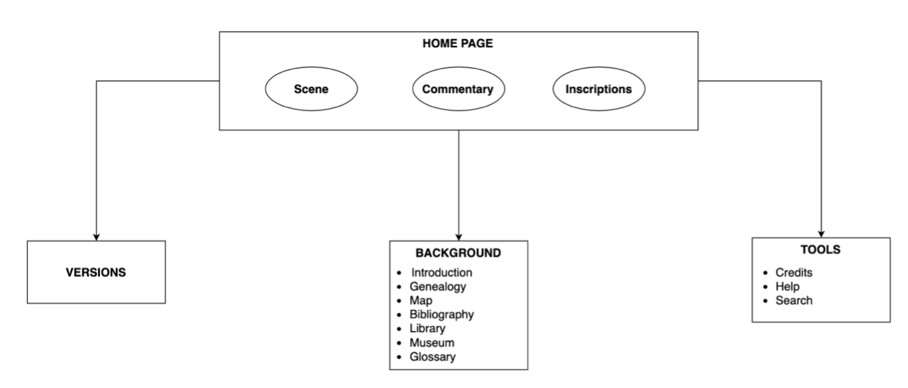
“Background” is undoubtedly the richer section of the website, as it contains all the additional multimedia and interactive resources (see section 2.1). It is also responsible for granting the scholarly quality of the edition, as its subsection “Introduction” offers a complete bibliographical excursus on the most interesting aspects of Tapestry and its facsimile, which are also mentioned in the “Bibliography” section. This richness of content also characterizes peritextual information. This can be stated by analysing “Tools”, which includes sections concerning credits, search (see section 4.2), and support. In particular, the first one has an entire paragraph devoted to the descriptions of the credits and permissions of the project. Most of the resources are under Foys’ copyright, and the list of credits toward external scholars or institutions is reported in detail. The user can read the edition according to two different licenses (individual and institutional), which is feasible for scholarly reuse of the data. Unfortunately, this page does not contain other information on the sustainment of the SDE and on further implementations. On the contrary, the page defines the project as concluded: the current version of the SDE is hence to be considered definitive.
Image and Text in the WWW. Remarks on the Editorial Rationale
Any analysis of the editorial principles beneath the BTDE must consider the historical and technological context in which it was conceived and developed. As mentioned above, the first release of the edition relied on CD-ROMs. It was later converted to an online Shockwave display by the publisher, without any further contribution by the editor (Foys 2023).4 Consequently, the current website relies heavily (if not even entirely) on the first version. The project, which was published in 2003, had indeed to deal with the difficulties of the challenges of combining textual resources with a consistent number of images of these supports (see section 3). Moreover, financial difficulties were at stake as it was only partially funded by different scholarly institutions, and an independent publishing house, “Scholarly Digital Editions”, was responsible for the publication of the results.
All these constraints are described in an article written by the
co-founder of this commercial activity, Peter Robinson (2013). This short historical excursus is
interesting as it first describes how CD-ROMs and the World Wide Web gave a
consistent impulse to the publication of scholarly digital editions. Later,
Robinson offers a reconstruction of the editorial context at the dawn of the new
millennium, supported by a brief report of the activity of his commercial
activity. “Scholarly Digital Editions”, founded in 2000 by Peter Robinson and
Barbara Bordalejo, was indeed one of the first private and independent publishing
houses trying to cover a consistent hole in this niche of the editorial market.
During its activity, it published ten different editions. However, from a mere
commercial and economic point of view, this experiment was a failure, also owing
to an unfair concurrence with university-affiliated publishing houses. “We lost
money on these publications”, admits the co-founder (Robinson 2013, 90). On the other hand, its job was
essential to disseminate and support crucial projects involved in digital
scholarly editing, such as the pivotal SDE by Prue Shaw on Dante’s
Commedia. In this context, BTDE is by far one of the most
successful experiments of this enterprise, as it is the best-seller
among all the other editions in the entire catalogue (see Fig. 9).5 “The
Bayeux Tapestry” – states Robinson (2013, 91) – “may claim to have sold more copies than any comparable
scholarly digital edition ever”. 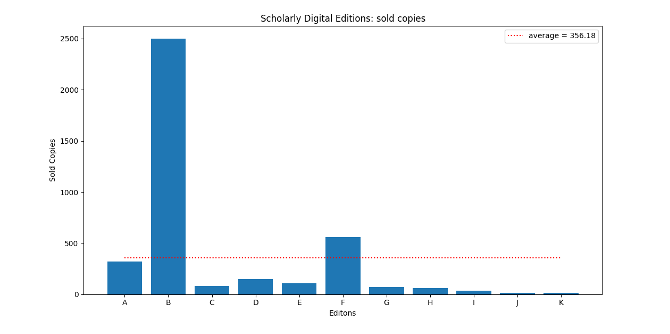
The attention to images and additional content, as well as the interactive features granted by the JavaScript structure, makes the BTDE a crucial point in the digital philological praxis. The hypermedial and interactive paradigm, indeed, exceeds the limit of a simple scholarly restitution of the text. Rather, it tries to gaze at the Tapestry as a unity of image and text developed in a specific social and political context. In this perspective, it would not be exaggerated to look at the edition as a hybrid experiment between ecdotic and museum practice (Foys himself names a section of the website as “Museum”). Indeed, the editor enhanced the philological restitution of the text with a very common model of a virtual museum, defined by Caraceni (2014),6 whose collection can be freely browsed within a closed environment. This innovative solution valorises both the tangible and intangible heritage of the cultural context depicted by the embroidery. The possibility to dynamically explore these resources thanks to this interactive paradigm is a considerable step towards democratizing knowledge: in fact, “the editor [manages to reveal] relationships to the reader: not only relationships among the various texts that belong to the work, but also those between them and other texts [and objects – I would add] related to the work” (Rasmussen 2016, 129).
In this project, hyperlinks are implemented as an “organizing principle”, which results in the creation of a deeply intertwined set of relations. This feature allows for switching from the commentary of the main scenes to the additional sections available in the background materials. Nonetheless, the paradigm followed by the edition is still linked to the methodologies of the Web 1.0 (the Semantic Web was introduced in 2006, i.e., almost four years later than the first edition of BTDE). As a matter of fact, the metadata of the objects presented in the “Background” material is reduced to a simple description of the source and the hosting institution in plain text. Consequently, the sole citation guideline available refers to the SDE as a whole and not to its single parts.
Concerning the publication of the project, the obsolescence of the use of web technologies is an obstacle to the sustainability of the project. Since the last version (no update is scheduled) dates to 2011, the website reflects old visual and functionality standards, starting from the implemented fonts and the sole export format available (a printable PDF available through the printer icon). However, these features do not affect the core aspects of the user experience: the combination of colours is pleasant to the eye, and in textual sections, every class of hyperlinks is rendered with a specific colour (see also Foys 2001). This colour-coded categorisation witnesses the kinship of BTDE interface with the web presentation of other early scholarly digital humanities. For instance, choosing as a case study the redesign of the Women Writers Project Online by Brown University from 1999 to 2006, Warwick underlines how this “innovative use of colour” can be considered one of the main peculiarities of these projects (Warwick 2020). She comments that “such a use of colour is evidently intended to help users unfamiliar with webpages to distinguish between different parts of the collection” (Warwick 2020, 7), which is coherent with “reader-oriented sensitiveness” of BTDE.
However, the out-of-date version available online still has a major hindrance to usability, as seen in the analysis of the “Map” section. In addition, the use of HTTP protocol instead of HTTPS can lead to different behaviours across different browsers (Siewert et al. 2022) and even to possible issues in content display (see a more detailed overview on the topic in Paracha et al. 2020). As an example, at the time of writing this review, the function “Search” does not run in all browsers.7 This page allows users to carry out simple boolean queries: they can be applied to the entirety of the edition or to a specific subsection (including the scene commentary but not the transcription), and they may be combined through logical operators. Given its extremely streamlined structure, the search engine can be used regardless of the previous knowledge of the user, even though no further support (e.g. auto-suggestion) is provided. Lastly, although the license allows the reuse of data, the extraction, exportation, and re-implementation of the resources of this edition, several factors make it difficult to extract all the data in a reusable and machine-readable format: the absence of a consistent data model and of annotated texts, and the possibility of choosing PDF as the sole export format.
Conclusion
Undoubtedly, BTDE is a “critical representation of a historic document”. In this sense, it perfectly fits the definition of SDE proposed by Patrick Sahle, who defines Foys’ project as a “good example” of the implementation of editorial methodology to a cultural artefact that is not exclusively a text carrier (Sahle 2016, 2). Indeed, the edition completely fulfils its aim of implementing digital potentialities to recreate a new immersive reading experience of the Tapestry: it is not just a digitized version as, if printed, the complex hyperlink and interactive would fade. The use of hypermedia as an epistemological basis for the structure of the SDE allows for easily identifying in this network-shaped architecture the real digital paradigm of the edition. Through the systematic use of hyperlinks, the project succeeds, in fact, in reproducing the cognitive habits of the reader, offering a multi-layer interpretation of the Tapestry.
The comparison with other scholarly digital editions provides useful coordinates to contextualize the project in the ever-evolving field of digital scholarly editing. The high quality and the richness of the available material are pioneering in the field (especially at the first release date), but the treatment of textual data is unorthodox. The philological statement is not clear: for instance, although it states the epistemological principle, it overlooks the chosen approach for text transcription. This approach reports the inscription in a semi-diplomatic transcription, yet often causing inconsistencies and, more seldom, mistakes (see the appendix).
In lieu of conclusion, BTDE is an interesting project from different perspectives, and its quality is certified by general scholarly rigour. Yet, a decade after the last modification, it would need a new, updated release. The possible modification may be delivered in three main directions. Firstly, the software should be updated with current technologies: interesting additional resources (e.g., “Map”) are no longer available due to the obsolescence of the implemented digital infrastructure, which seriously hinders the usability of the edition. Moreover, new scholarly tools for the analysis of textual data and iconographic details (in particular, borders) should be provided.
As mentioned, XML/TEI markup would surely be a key solution: it would allow the creation of indexes and the manipulation of text strings and, lastly, would pave the way to the application of NLP technologies, for example, for more specific queries for linguistic patterns. In addition, the editor deciphers the complex iconology of the borders in the commentaries, but these aspects are difficult to isolate on a large scale. Annotation techniques and ad hoc search engines would allow for performing systematic and contrastive iconographic analysis.
Thirdly, a new edition of the BTDE should update the web infrastructure to be compliant with the requisites of the Semantic Web. The rich interconnection between the resources would surely be valorized by the implementation of a Semantic Digital Edition, which fosters “a view of the text ‘from above’, not as a sequence of data but as a network of relationships” (Tomasi, Giovannetti and Daquino 2019, 51).8 In order to achieve this goal, the TEI markup should be enhanced with a serialization as Linked Open Data, which is today made possible in the Text Encoding Initiative.9 These changes would considerably improve the usability of the edition and would create a digital object compatible with the most recent framework for data reusability (such as the FAIR principles).
Regardless of these suggestions, BTDE can be considered a milestone project in the field of SDE for its time. Foys’ intuition of identifying hypermediality as the paradigm for translating a multimedial artefact into an easily surfable digital environment is innovative and ambitious. Indeed, it is also addressed to a non-specialized audience and, lastly, advances new frontiers of the field of digital scholarly editing, highlighting the potentialities of those editorial practices when applied at the intersection of art history and literary studies.
Appendix. Features of Inscriptions and Transcription Habits: a Minimum Sample
The editor divides the words, which are embroidered in scriptio continua (Fig. 10), without reflecting the layout of the Tapestry (Fig. 11), as the line break is usually marked just by a white space (Fig. 12). Moreover, the polychrome of the inscription is not rendered (Fig. 13). On the contrary, the editor keeps the alternate between capital and semi-uncial characters (Fig. 14 and 15). Yet, some inconsistencies can be found (see the different rendering of WIDONIS in Fig. 11, with an apparently lowercase dental, and WIDO, Fig. 16). The arcigrapheme <V> is distinguished between [u] (Fig. 17) and [v] (Fig. 18), while the occurrences of <VV>, probably correspondent to [gw], are rendered as <W>, even though the transcription is not always consistent (Fig. 16, 17, 18).
The editor does not distinguish legaturae (Fig. 19, 20, 21) and tituli (Fig. 22, 23, 24, 25, and 26), either: they are rendered within the brackets, but in 8b, the entire word is rewritten. Short-hand symbols (e.g., the Tironian note in Fig. 27) are solved similarly. Moreover, conjectures are identified by “(…?)” and square brackets (Fig. 28), while emendations are signalled similarly to tituli. In addition, some of these corrections are not always necessary. The Latin of the Tapestry does not coincide with the Classical variety.10 This can be evident just from a lexical point of view (caballi instead of equi, parabolant instead of loquntur): the transcription itself does not correct simplified diphthongs (prelium, Fig. 29), but sometimes implements morphosyntactic corrections. For instance, the suffix of the accusative is added (Fig. 30), or active verbs are reconducted to the classical deponent form (Fig. 31).
| Case | Facsimile | Transcription | Panel11 |
|---|---|---|---|
| 1. | 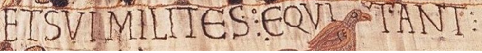 | ET SUI MILITES: EQUITANT | 3 |
| 2. | 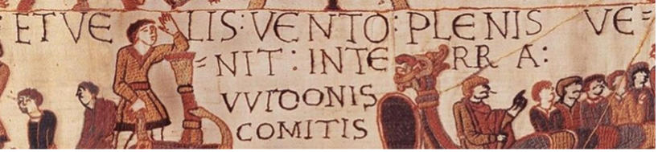 | ET VELIS: VENTO: PLENIS VE==NIT: IN TERRA: WIDONIS COMITIS | 9 |
| 3. | 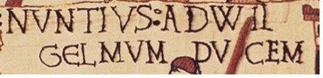 | NUNTIUS : AD WIL GELMUM DUCEM | 27 |
| 4. | 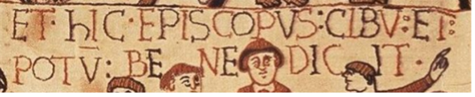 | ET hIC EPISCOPUS : CIBU(M) : ET : POTU(M) BENEDICIT | 111 |
| 5a. | 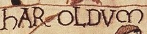 | hAROLDUm | 29 |
| 5b. | 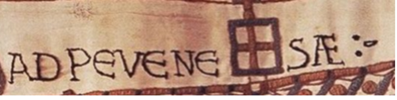 | AD PeVeNeSÆ :- | 97 |
| 6a. | 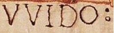 | WIDO: | 14 |
| 6b. | 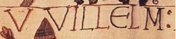 | VVILLeLM | 126 |
| 6c. | 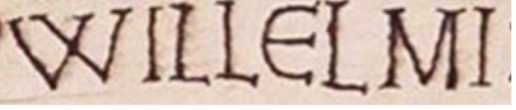 | WILLELMI | 78 |
| 7a. | 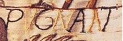 | PUGNANT | 161 |
| 7b. | 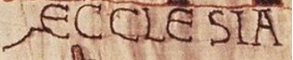 | AECLLESIA | 4 |
| 7c. | 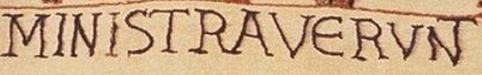 | MINISTRAVeRUN(T) | 110 |
| 8a. | 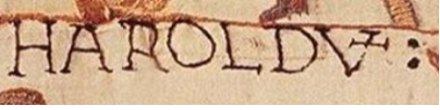 | HAROLDU(m) | 14 |
| 8b. | 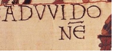 | AD WIDO NE (Widonem) | 24 |
| 8c. | 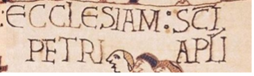 | ECClESIAM : S(AN)C(T)I PETRI AP(OSTO)LI | 67 |
| 8d. | 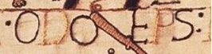 | ODO EP(iscopu)S : | 158 |
| 8e. | 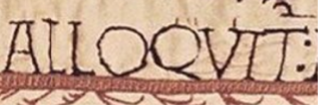 | ALLOQUIT(UR) : | 70 |
| 9. | 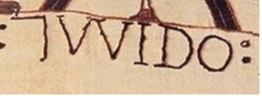 | 7 (et) WIDO: | 19 |
| 10. | 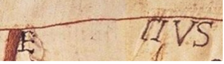 | E . . . . . (T?)IUS [EUSTATIUS] | 161 |
| 11a. | 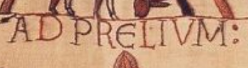 | AD PreLIUM : | 125 |
| 11b. | 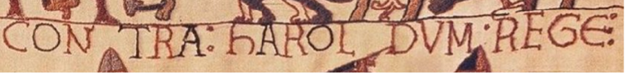 | CONTRA : hAROLDUM . REGe(M) | 125 |
| 11c. | 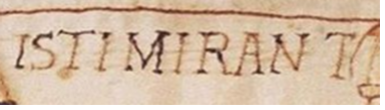 | ISTI MIRANT(UR) | 73 |
Bibliography
- Brilliant, Richard. 1991. “The Bayeux Tapestry: a stripped narrative for their eyes and ears.” Word & Image: A Journal of Verbal/Visual Enquiry 7:2: 98–126. https://doi.org/10.1080/02666286.1991.10435818.
- Caraceni, Simona. 2014. Designing a taxonomy of virtual museums for the use of AVICOM professionals. PhD Thesis, Plymouth University.
- Ciula, Arianna, and Fabio Ciotti, eds. 2014. “Selected Papers from the 2013 TEI Conference”, Journal of the Text Encoding Initiative 8. https://doi.org/10.4000/jtei.1025.
- Clackson, James, and Geoffrey Horrocks. 2007. “Latin in Late Antiquity and Beyond.” In The Blackwell History of the Latin Language, 265–304. Malden: Blackwell Publishing.
- Foys, Martin K. 2001. “Hypertextile Scholarship: Digitally Editing the Bayeux Tapestry.” Documentary Editing: Journal of the Association for Documentary Editing (1979–2011) 23 (2): 34–43. https://web.archive.org/web/20250222175117/https://digitalcommons.unl.edu/cgi/viewcontent.cgi?article=1437&context=docedit.
- Foys, Martin K., ed. 2011. Bayeux Tapestry Digital Edition (revised edition). Scholarly Digital Editions. Accessed January 27, 2024. http://www.sd-editions.com/bayeux/online/index.html#.
- Foys, Martin K., answer to an email by Manuele Veggi. 2023. Bayeux Tapestry Digital Edition: Request of Information (February 5).
- Gameson, Richard. 1997. The Study of the Bayeux Tapestry. Woodbridge: The Boydel Press.
- Landow, George, and Paul Delany. 1991. “Hypertext, hypermedia and literary studies: the state of the art.” In Hypermedia and Literary Studies, edited by Paul Delany and George P. Landow. Cambridge: MIT Press.
- Mancinelli, Tiziana, and Elena Pierazzo. 2021. Che cos'è un'edizione critica digitale. Roma: Carocci editore.
- Paracha, Muhammad Talha, Balakrishnan Chandrasekaran, David Choffnes, and Dave Levin. 2020. “A Deeper Look at Web Content Availability and Consistency over HTTP/S.” Traffic Monitoring and Analysis. https://web.archive.org/web/20250223095517/https://www.cs.umd.edu/~dml/papers/https_tma20.pdf.
- Pasquali, Giorgio. 2020. Storia della tradizione e critica del testo. Firenze: Le Lettere.
- Pierazzo, Elena. 2011. “A rationale of digital documentary editions.” Literary and Linguistic Computing 26 (4): 463–477. https://doi.org/10.1093/llc/fqr033.
- Pierazzo, Elena. 2017. “Facsimile and Document-Centric Editing.” In Creating a Digital Scholarly Edition with the Text Encoding Initiative. A Textbook for Digital Humanists, edited by Marjorie Burghart. DEMM. https://web.archive.org/web/20250223102119/https://ec.europa.eu/programmes/erasmus-plus/project-result-content/cfb03c8e-6765-477e-aa4d-e2b162f57068/IO2_Creating%20a%20digital%20edition%20with%20the%20TEI.pdf.
- Rasmussen, Krista Stinne Greve. 2016. “Reading or Using a Digital Edition? Reader Roles in Scholarly Editions.” In Digital Scholarly Editing. Theories and Practices, edited by Matthew J. Driscoll and Elena Pierazzo, 119–136. Cambridge: Open Book Publishers. http://dx.doi.org/10.11647/OBP.0095.07.
- Robinson, Peter. 2013. “The History of Scholarly Digital Editions, Plc.” Papers of The Bibliographical Society of Canada 51 (1): 83–104. https://doi.org/10.33137/pbsc.v51i1.20763.
- Sahle, Patrick. 2016. “What is a Scholarly Digital Edition?” In Digital Scholarly Editing. Theories and Practices, edited by Matthew J. Driscoll and Elena Pierazzo, 19–40. Cambridge: Open Book Publishers. http://dx.doi.org/10.11647/OBP.0095.02.
- Siewert, Hendrik, Martin Kretschmer, Marcus Niemietz, and Juraj Somorovsky. 2022. “On the security of parsing security-relevant HTTP headers in modern browsers.” In 2022 IEEE Security and Privacy Workshops (SPW), San Francisco, CA, USA, 2022, 342–352. https://doi.org/10.1109/spw54247.2022.9833880.
- Spear, David. 1992. “Recent Scholarship on the Bayeux Tapestry: David M. Wilson, «The Bayeux Tapestry; David J. Bernstein, The Mystery of the Bayeux Tapestry»; N. P. Brooks and H. E. Walker, «The Authority and Interpretation of the Bayeux Tapestry»; Shirley Ann Brown, «The Bayeux Tapestry : History and Bibliography».” Annales de Normandie 42 (2): 221–226.
- Tomasi, Francesca, Francesca Giovannetti, and Marilena Daquino. 2019. “Linked Data per le edizioni scientifiche digitali. Il workflow di pubblicazione dell'edizione semantica del quaderno di appunti di Paolo Bufalini.” Umanistica Digitale 7. http://doi.org/10.6092/issn.2532-8816/9091.
- UNESCO. 2006. “Bayeux Tapestry.” Memory of the World. https://web.archive.org/web/20240102143806/https://www.unesco.org/en/memory-world/bayeux-tapestry.
- van Zundert, Joris. 2016. “The Case of the Bold Button: Social Shaping of Technology and the Digital Scholarly Edition.” Digital Scholarship in the Humanities 31 (4): 898–910. https://doi.org/10.1093/llc/fqw012.
- Warwick, Claire. 2020. “Interfaces, ephemera, and identity: A study of the historical presentation of digital humanities resources.” Digital Scholarship in the Humanities 35 (4): 944–971. https://doi.org/10.1093/llc/fqz081.
Notes
- Unfortunately, not all these contacts are updated. To contact the main editor, Prof. Foys, another institutional mail (affiliated with the University of Wisconsin–Madison) has been used by the author of this review. ↑
- Pasquali (2020, 26) mentions the role of codices descripti, particularly in the history of culture. The facsimiles were created both to have a reliable reproduction in case of damage to the original embroidery and to allow diffusion of the French artwork in England. They are interesting sources for understanding the reception of the Tapestry, similar to engravings for artistic masterpieces. ↑
- The format was declared obsolete at the end of 2020, but it can still be opened with external software (e.g., Ruffle). ↑
- The edition should have allowed switching between the CD-ROM and the web interface. Nonetheless, the available link does not work correctly, and a “404 error” page is displayed. ↑
- The catalogue of the enterprise from its founding to 2013 contains ten titles (in brackets, the identifier used in Fig. 9 above is given). Estelle Stubbs (ed.), The Hengwrt Chaucer Digital Facsimile, 2000 (A); Martin Foys (ed.), The Bayeux Tapestry Digital Edition, 2002 (B); Ceridwen Lloyd-Morgan (ed.), The Hengwrt Chaucer Standard Edition, 2003 (C); Barbara Bordalejo (ed.), Caxton’s Canterbury Tales: The British Library Copies, 2003 (D); Elena Pierazzo (ed.), The Miller’s Tale on CD-ROM, 2004 (E); Christopher Given-Wilson et al (eds.), The Parliament Rolls of Medieval England, 2005 (F); Paul Thomas (ed.), The Nun’s Priest’s Tale on CD-ROM, 2006 (G); Prue Shaw (ed.), Dante: Monarchia, 2007 (H); Jos Weitenberg (ed.), Leiden Armenian Lexical Textbase, 2008 (I); Daniel W. Mosser (ed.), A Digital Catalogue of the Pre-1500 Manuscripts and Incunables of the Canterbury Tales, 2010 (J); Prue Shaw (ed.), Dante Alighieri: Commedia, 2010 (K). ↑
- The virtual museum category that seems to best describe this model is the category A. A more detailed definition of this aspect is available in Caraceni (2014, 183). ↑
- Suggested browser: Mozilla Firefox. ↑
- Personal translation. Orginal Italian version: “una visione del testo ‘dall'alto’, non come sequenza di dati ma come rete di relazioni”. ↑
-
For example, the
<xenoData>section tag allows to express metadata from other schemes. Regarding this topic, see the reference for this element in the TEI P5 guidelines, as well as the proceedings of the 2013 TEI Conference. ↑ - A precise phenomenology of Late Antiquity Latin is provided by Clackson and Horrocks (2007). ↑
- It is possible to directly reach the discussed locus both by clicking on the embedded hyperlink in the case number (first column) or by manually typing the corresponding panel number (third column) in the slider in upper right corner of BTDE main section. ↑
@article{bayeux,
author = {Veggi, Manuele},
title = {Sewing text and images together in the digital environment. A review of Bayeux Tapestry Digital Edition},
journal = {RIDE – A review journal for digital editions and resources},
number = {20},
year = {2025},
doi = {10.18716/ride.a.20.3},
url = {https://doi.org/10.18716/ride.a.20.3},
}TY - JOUR
AU - Veggi, Manuele
TI - Sewing text and images together in the digital environment. A review of Bayeux Tapestry Digital Edition
T2 - RIDE – A review journal for digital editions and resources
IS - 20
PY - 2025
DA - 2025/02
DO - 10.18716/ride.a.20.3
UR - https://doi.org/10.18716/ride.a.20.3
PB - Institut für Dokumentologie und Editorik e.V.
LA - en
ER - Veggi, M. (2025). Sewing text and images together in the digital environment. A review of Bayeux Tapestry Digital Edition. RIDE – A review journal for digital editions and resources, (20). https://doi.org/10.18716/ride.a.20.3Veggi, Manuele. "Sewing text and images together in the digital environment. A review of Bayeux Tapestry Digital Edition." RIDE – A review journal for digital editions and resources, no. 20, 2025. https://doi.org/10.18716/ride.a.20.3.Veggi, Manuele. "Sewing text and images together in the digital environment. A review of Bayeux Tapestry Digital Edition." RIDE – A review journal for digital editions and resources, no. 20 (2025). https://doi.org/10.18716/ride.a.20.3.